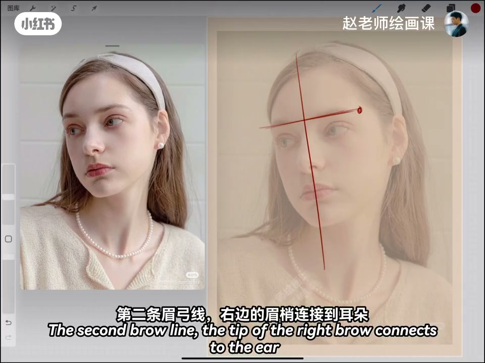
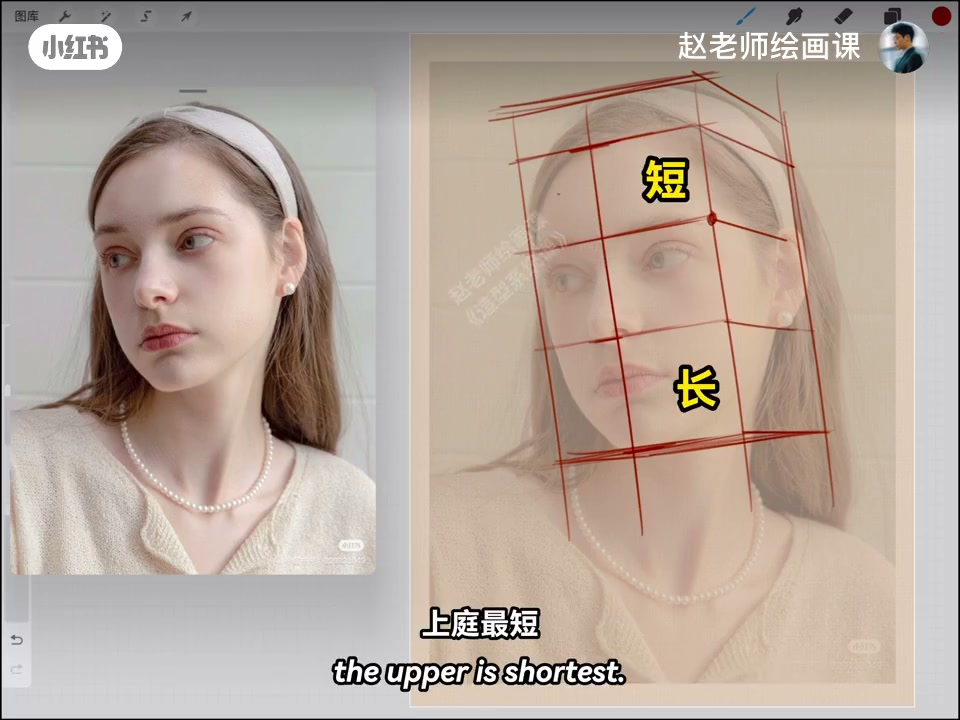
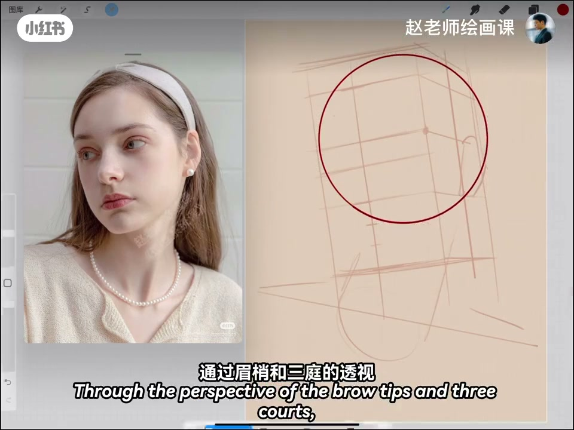
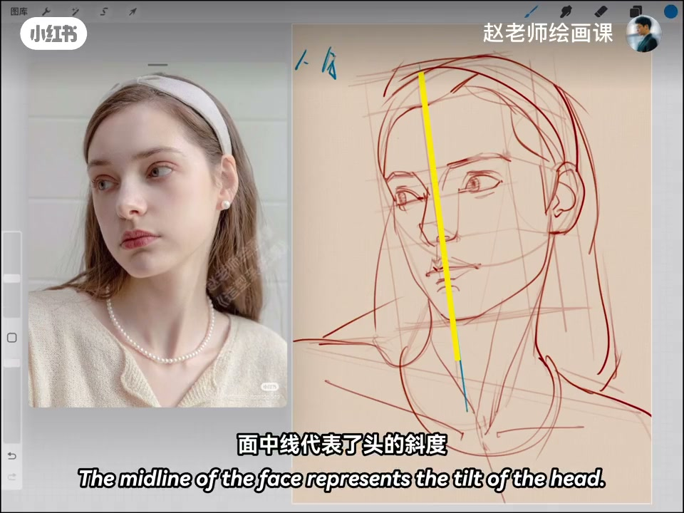

内容要点
画活头部动态，关键常落在两根线与一个点：面中线定斜度，眉弓线把眉梢连到耳朵得到正侧面，眉梢点钉住扭转。补全头部立方体一眼见仰视；仰视三庭下庭最长上庭最短，脖子用圆柱交代走向。五官按近大远小微调耳眼口位，再细化额鼻眼嘴耳发。回顾口令：斜度、扭转、仰角——三把斧抓住动态。
知识结构
面中线＋眉弓线＋眉梢点；立方体见仰视；三庭不等分。
耳眼口线因透视位移；细化宽窄与发箍弧。
斜度／扭转／仰角三把斧；素材在评论区。
先用面中线、眉弓到耳线与眉梢点锁死头部斜度、扭转与仰角，再谈五官细节。
00:00-00:442线1点与仰视立方体
想画好头部动态，关键在两根线一个点：先找面中线定头的斜度；第二条眉弓线把右边眉梢连到耳朵，得到头部正侧面，再补全头部立方体——很明显是仰视。
按点位找三庭：仰视并非等分，离我们最近的下庭最长、上庭最短；用圆柱表示脖子走向，头颈肩关系就清楚了。00:14／00:35 为证据。


00:44-01:36五官透视与细化
耳朵原在侧面二分之一，因近大远小线要右移；眼睛原在中庭四分之一，仰视略下移；口裂线约在下庭三分之一。经眉梢与三庭透视找颧骨缘，连出脸的基本形，脖子肩膀带出。
细化常从额头起：眉间提点到鼻梁，鼻底面略宽；定眼宽、带出脸颊；注意嘴的总宽与透视（下唇可更宽）；仰视耳垂变大，外耳轮内耳轮弧度随透视变；头发抓大走势，发箍圆弧透视要准。01:10 定眼宽可指认。

01:36-02:41回顾：三把斧
眼细化时仰视上眼睑弧增大、下眼睑变平缓；瞳孔可参考嘴角延伸线；眉毛形状讲究些。完成后回顾：面中线＝斜度，眉梢点＝扭转，眉弓到耳延伸线＝仰视角——三把斧牢牢抓住头部动态。
示范结束，素材放评论区。02:20 回顾画面可核验。

完整转录（60段）
以下文本由 Whisper medium 模型自动转录，可能存在少量识别误差，已尽可能修正。
想要画好头部动态
关键在于两根线和一个点
我们先找到面中线
它可以帮助我们确定好头的斜度
第二条眉弓线
右边的眉梢连接到耳朵
我们可以得到头部的正侧面壁
不全头部所在的立方体
很明显的可以看出这是一个仰式的角度
那么我们根据点位找到三亭
因为仰式三亭并不是等分的
离我们最近的下亭最长 上亭最短
同时我们用圆柱来表示脖子的走向
整体的头近坚关系就彻底解决了
下来是五官
我们都知道耳朵原本是在侧面的二分之一处
现在因为近大远小的透视
这条线要向右移动
眼睛原本在中亭的四分之一
但同样因为仰式这条线要稍微往下一移
口列线在仰式的角度下
基本在下亭的三分之一处
头颅是一个圆形
通过眉梢和三亭的透视
我们可以找到镍骨缘
连接起来可以找到脸部的基本形状
脖子肩膀可以带出来
下来就是细化了
我一般喜欢从额头开始
眉间的提醒到鼻梁
鼻底这个面要宽一些
眼睛确定一下宽度
脸颊自然的带出来
嘴巴也要注意它的总的宽度和透视变化
比如刹嘴唇是要宽一些
耳朵因为仰式耳垂会变大
外耳轮和内耳轮的弧度也会因为透视发生一些变化
头发关注一个大的走势和形状就可以了
还有发箍这个圆弧也要把透视化准确
眼睛在细化的时候
要注意仰式的角度下
上眼睑的弧度会增大
下眼睑会变得平缓
瞳孔也可以根据嘴角的延伸线来定
眉毛的形状要讲究一些
很简单吧
一个动态生动
比例透视准确的小姐姐就完成了
我们来回顾一下
面中线代表了头的斜度
眉梢这个点位
决定了头的扭转角度
眉弓到耳朵的延伸线
决定了头的仰式的视角
这三把斧就可以牢牢地抓住头部的动态
好了
以上就是今天的全部示范
素材我放在评论区
大家垫起来吧
拜拜